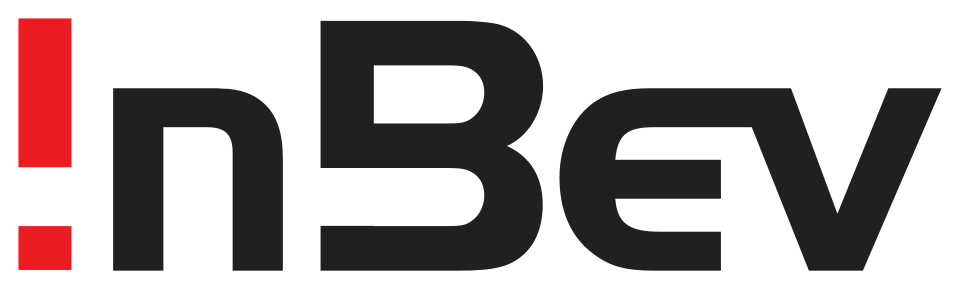

인베브 InBev Belgium
인베브(InBev Belgium)는 벨기에의 맥주 회사로, 2004년 인터브루(Interbrew)와 암베브(AmBev)의 합병으로 탄생한 양조 회사이다. 현재는 앤하이저부시 인베브의 자회사이다.
최종 업데이트

인베브는 어떤 브랜드인가
인베브는 벨기에 안데를레흐트에 본사를 둔 맥주 양조 회사로, 국제적으로 사업을 벌이는 브랜드이다. 2004년 벨기에에 본사를 둔 인터브루(Interbrew)와 브라질 양조업체 암베브(AmBev)가 합병하면서 탄생했다.
인베브는 30개국 이상에서 운영되었고 130개국 이상에서 판매되었다. 2006년 기준 시가총액은 306억 유로, 순이익은 32억 유로, 매출은 133억 유로였다.
2008년 앤호이저 부시(Anheuser-Busch)를 인수해 앤하이저부시 인베브(약칭 AB InBev)가 설립되기 전까지 독립적으로 존재했다. 현재는 앤하이저부시 인베브의 자회사로 남아 있다.
인베브는 어떻게 시작되고 성장했나
인베브는 2004년 벨기에에 본사를 둔 인터브루와 브라질 양조업체 암베브의 합병으로 탄생했다. 이후 2008년 7월 13일 앤호이저 부시를 인수해 앤하이저부시 인베브라는 새 회사를 설립했다.
미국에서 반독점 승인을 얻기 위해 라바트(Labatt) 맥주를 미국으로 수입한 회사를 매각하는 데 동의했고, 이 거래는 2009년 3월 13일에 완료되었다. 2016년 10월 10일에는 앤호이저 부시 인베브가 SAB밀러를 690억 파운드(미화 1,070억 달러)에 인수했다.
인베브의 브랜드 아이덴티티는 무엇인가
2004년 인터브루와 암베브의 합병으로 탄생해 2008년까지 독립적으로 존재했고, 지금은 앤하이저부시 인베브의 자회사로 남은 벨기에 맥주 회사이다.
인베브의 대표 제품과 서비스는 무엇인가
인베브는 지금 어떤 상태인가
인베브는 현재 앤하이저부시 인베브의 자회사이다. 2008년 앤호이저 부시 인수 이후에는 독립적으로 존재하지 않게 되었다.
2016년 SAB밀러 인수 후 앤하이저부시 인베브 SA/NV가 된 새 회사는 MillerCoors를 Molson Coors에 매각하고 수많은 유럽 브랜드를 아사히맥주에 매각했다. SABMiller는 인수 후 글로벌 주식 시장에서 거래를 중단했다.
인베브 로고는 어떻게 변해왔나
자주 묻는 질문
인베브는 어느 나라 브랜드인가요?
인베브는 벨기에의 식음료 브랜드입니다.
인베브는 언제 설립되었나요?
인베브는 2004년 설립되었습니다.
인베브의 브랜드 아이덴티티는 무엇인가요?
2004년 인터브루와 암베브의 합병으로 탄생해 2008년까지 독립적으로 존재했고, 지금은 앤하이저부시 인베브의 자회사로 남은 벨기에 맥주 회사이다.
인베브의 대표 제품은 무엇인가요?
인베브의 사업은 맥주 양조이며, 인베브 브랜드 중에는 라바트 맥주가 있다.
인베브는 현재 어떤 상태인가요?
인베브는 현재 앤하이저부시 인베브의 자회사이다.
인베브의 본사는 어디에 있나요?
인베브의 본사는 안데를레흐트에 있습니다(위키데이터 기준).
인베브의 모기업은 어디인가요?
인베브의 모기업은 앤하이저부시 인베브입니다(위키데이터 기준).
출처와 검증
인베브 관련 참고: 공식 웹사이트 · 위키데이터 Q1416717 · 한국어 위키백과 · 영어 위키백과. 브랜드명은 한글과 원어를 함께 표기하되 데이터에 없는 표기는 만들지 않습니다. 기원 국가·설립연도는 검수된 정의문에서 확인된 값을 우선하고, 없을 때만 공식 웹사이트 URL이 일치하는 위키데이터 개체의 값을 씁니다. 위키데이터 값은 2026-11-08 기준입니다.